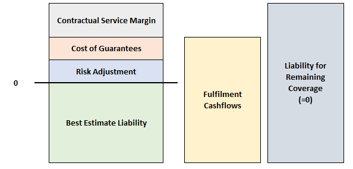
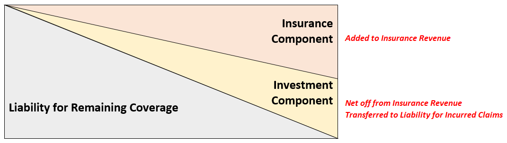
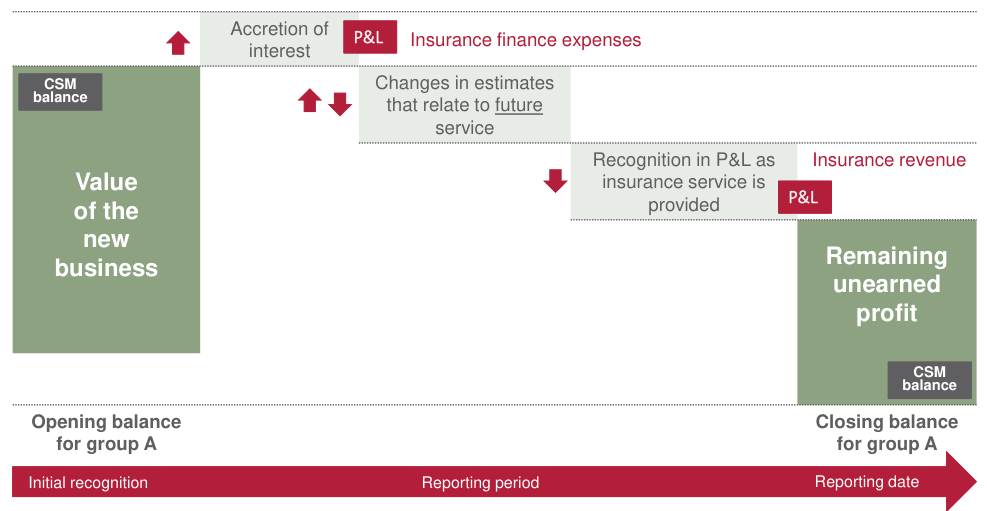
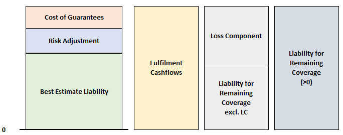
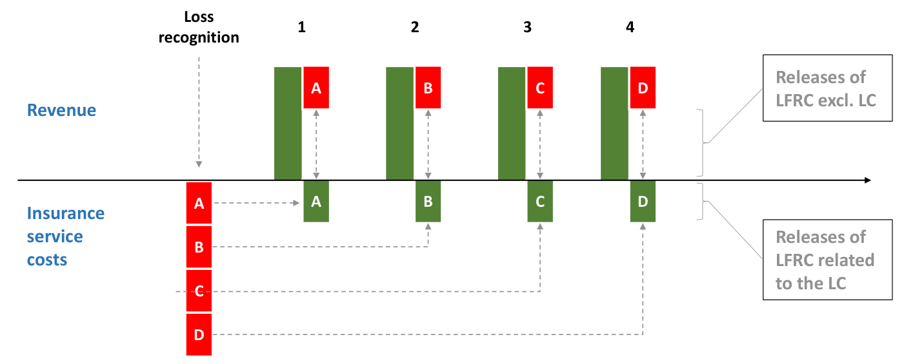
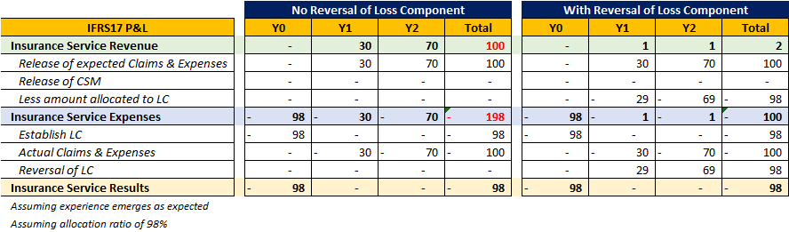
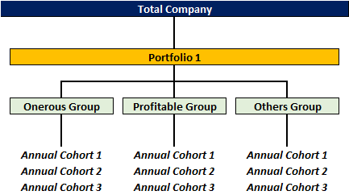

IFRS17 Overview¶
Background¶
IFRS stands for the International Financial Reporting Standard, which is a financial reporting framework to bring transparency and consistency to financial statements worldwide. IFRS17 is the set of standards that specifically cover the treatment of insurance contracts.
Info
There are two key IFRS standards for insurers:
- IFRS17 - Insurance Contracts (Liablities)
- IFRS9 - Financial Instruments (Assets)
Both standards were designed to work in tandem with one another, thus they should be adopted together to prevent accounting mismatches between the two components.
It is important to have a clear distinction between the two common types of reporting:
-
Financial Reporting - Provide accurate and objective information about the company in a consistent format to external stakeholders to facilitate their decision making.
-
Statutory Reporting - Provide information about the company to government authorities to prove compliance with relevant regulations. Certain simplifications or materiality considerations are allowed for operational ease. Given that Solvency is a primary concern, a more conservative lens is taken.
Another broad concept to understand is that IFRS17 is a Principle Based framework. It outlines the intended outcomes of the framework, giving insurers the flexibility to choose the method in which they achieve the outcome. As such, there are no prescriptive methods or amounts outlined as they view them as creating arbitrage opportunities.
Unless otherwise stated, all assessments and grouping of contracts under IFRS17 only occur once at inception, unless a modification to the contract have been made.
Scope¶
The main focus of IFRS17 are Insurance Contracts - Contract where the issuer accepts significant insurance risk from the policyholder by agreeing to compensate the policyholder if an insured event adversely affects the policyholder.
-
Contract - Agreement between two or more entities that creates legally enforceable rights and obligations
-
Insurance Risk - Non-financial risk that is transferred from the policyholder to the issuer. The risk must be specific to the policyholder and already exist; risk arising from the contract is NOT insurance risk.
-
Insured Event - Uncertain future event covered by an insurance contract that creates insurance risk. Uncertainty could be in the form of probability/timing of the event, or how much the insurer will need to pay if the event occurs
-
Insurable Interest - Notion that the policyholder is adversely affected by the insured event
Warning
There are contracts that may be legally considered insurance contracts, but do not fall under the above definition and thus are NOT covered under IFRS17.
Tip
Risks such as Expense and Lapse risk that arise from the contract are typically NOT insurance risk. However, these are considered insurance risks for the purposes of a reinsurance contract as they already exist before the reinsurance contract.
Insurance is deemed as significant if there is a scenario with commercial substance, where on a present value basis, the insurer could suffer a loss or pay a significantly more than if the insured event did not occur.
Tip
This applies even if there at least ONE scenario, regardless of the likelihood of the event.
One key exception is for Investment Contracts with Discretionary Participating Features (DPFs). An entity may account for these policies under IFRS17 if the entity also issues insurance contracts (for simplicity to avoid scope creep).
- Discretionary amounts are expected to be a significant portion of all benefits
- Timing or Amount of payments are at the discretion of the entity
- Payments are linked to returns on a specified pool of contracts or assets, or the performance of the issuer
Presentation¶
IFRS17 adopts the view that an insurance should be treated as both a Financial Instrument and a Service Contract:
-
If it were only treated as a financial instrument, it should be valued at its fair value (to be consistent with existing IFRS frameworks); the price it would go for if it would be sold in an orderly transaction. However, insurance contracts are rarely traded, making such approaches based on hypothetical scenarios.
-
Instead, insurance contracts are typically held till expiry, where insurers provide the stipulated benefits over time as agreed. Thus, it is also treated as a service contract, which is valued based on the insurance services provided over time.
Thus, it splits the Income Statement into two key components:
- Insurance Service Results = Insurance Revenue - Insurance Service Expenses
- Investment Results = Investment Income - Insurance Finance Expenses
-
- Allows external stakeholders to better understand the different drivers of the insurer's performance

Most life insurance contracts tend to have both an insurance and investment component of the contract (EG. Fund Value in Unit-Linked contract). Based on the above split, it is not appropriate to include items relating to the investment component in the insurance service results; thus they should be net out.
However, the cashflows relating to insurance and investment components are often highly interrelated and difficult to seperate, thus IFRS17 defines them as:
- Investment Component - Amount that the insurer has to pay even if the insured event does NOT occur
- Insurance Component - Additional amount the insurer has to pay when the insured event does occur
Investment Components only need to be seperated at the time of recognizing insurance revenue and expenses (income statement). They can be combined for the purposed of contract measurement.
The intuition is that the investment component represents deposits that the insurer is investing on behalf of the policyholder that will eventually be returned to them, hence the amount should not impact the income statement. However, the charges set by the insurer for such investments does flow into the FCF and hence CSM/LC and does impact the income statement.
Note
There are two types of investment components under IFRS17:
- Distinct - Clearly seperated from insurance components. Investment component measured seperately under IFRS9
- Non-Distinct - Highly Interrelated with insurance components. Measured together under IFRS17
A key impact of the above concepts is that premiums are NOT considered under the insurance revenue:
- Insurance revenue is based on expected services provided, not when cash is received
- Most premiums also contain a non-distinct investment component that will be repaid regardless, which is difficult to split out
Instead, the reduction in liability
Measurement¶
IFRS17 uses the term Measurement when refering to the value of the contract. There are two key variations:
- Initial Measurement: Contract valued at policy inception
- Subsequent Measurment: Contract valued post-inception
An insurance contract is measured based on the Fulfilment Cashflows (FCF) of the contract, which incorporates the following components:
- Unbiased estimate of the future cashflows (neither conservative nor optimistic)
- Adjustment for the time value of money
- Adjustment for non-financial risk(s)
- Adjustment for financial risk(s)
Deposit cashflows
The above can then be summarized into three key components:
-
Best Estimate Liability (BEL) - Present value of the unbiased cashflows
-
Risk Adjustment (RA) - Present value of adjustment for non-financial (insurance) risks. It reflects the risk that actual experience might deviate from the best estimates.
-
Cost of Guarantees (COG) - Present value of the adjustment for financial risk. It reflects the risk that financial variables might cause embedded options and guarantees in the product becomes in-the-money.
Warning
Both BEL and TVOG are NOT officially defined terms under IFRS17; they were brought over from other valuation bases by the industry:
- BEL - Officially defined under Solvency II
- TVOG - Officially defined European and Market Consistent Embedded Values
Warning
Financial Risks are typically accounted for implicitly in the cashflows or discount rates. TVOG is typically the only explicit adjustment, hence it is emphasized above.
The below sections on CSM and LC will be based on the defualt measurement method, known as the General Measurement Approach (GMA). However, there are other measurement methods that may be used under certain conditions which will be covered after. Unless otherwise stated in those sections, the mechanism should follow the same as the GMA.
Contract Boundary¶
Liability¶
IFRS17 liability is split into two components:
- Liability for Remaining Coverage (LRC) - relating to future insurance services
- Liability for Incurred Claims (LIC) - relating to past insurance services
On initial measurement, all FCFs will flow to LRC as the contract is newly established.
On subsequent measurement, only changes to future FCFs (EG. assumption changes) will affect the LRC. Actual and expected FCFs that relate to past service (EG. most recent period) will flow in and out of the LIC.
It is important to remember that changes in the balance sheet come from two sources:
- Income Statement - Recognition of transactions
- Cashflow Statement - Actual transactions
- The two items are not always aligned. Thus, the net impact will change the holding liability.
Contractual Service Margin¶
On Initial Measurement, if the FCF is negative, the insurer expects a net inflow; the contract is expected to be profitable. In this case, the insurer will set up a positive Contractual Service Margin (CSM) under the LRC:

The CSM effectively represents the excess of inflows over outflows and is a measure of the unearned profit of the contract. It is set-up to ensure that the expected profit from the contract is NOT recognized immediately. This follows the principle of a service, where profit should be recognized each period based on the amount of service provided. Thus, the CSM is amortized each period, released as revenue under the insurance service results.

Note
The amortization of CSM is based on the Coverage Units of the contract. It is quantitative measure of the insurance services provided each period, serving as a systematic method of CSM amortization.
On Subsequent Measurement, the CSM is adjusted BEFORE any release:
-
CSM accretes interest based on the initial discount rate. This is to reflect the price of the service at the time it is fulfilled (time value effect). This is accounted for as an expense under investment results.
-
CSM is adjusted for changes in non-financial assumptions. Given the inherent uncertain nature of the business, this is to reflect the insurers latest expectation of the business.
-
Changes relating to financial assumptions (EG. Discount rate) are NOT reflected in the CSM. They will flow directly to the Insurance Finance Income line in the P&L.
Note
The CSM of a contract is essentially calculated using only the discount rate at inception, commonly referred to as the Locked-In Rate (LIR).

Loss Component¶
If on initial measurement, the FCF is positive, then the insurer expects to make a loss on the contract instead. In this scenario, the insurer will instead set-up a Loss Component (LC) in the LRC instead. However, it is IMMEDIATELY recognized as an expense under the insurance service results. It is NOT a "negative CSM" that recognizes losses over time. This asymmetric treatment of profits and losses is a key concept in IFRS17.
Unlike CSM, the LC does not smoothly fit into the LRC; it is carved out of the existing LRC:

The LC is subsequently reversed such that it becomes zero by the end of the contract term. While this sounds similar to CSM, the direction and mechanics of flow is different:
- CSM Amortization - CSM released from B/S to revenue in P&L
- LC Reversal - Portion of revenue is re-allocated as an expense that will flow to B/S to reduce the LC
Unlike CSM, the reversal of the LC has NO impact on the total insurance service results. It reflects that the loss has already been incurred at inception and thus relevant items relating to it should be excluded in subsequent periods. It ensures that the revenue and expenses presented are sensible; otherwise, they will be overstated.
- The reversal reduces BOTH the revenue and expense (neutral impact)
- IFRS17 states that the reversal must be done systematically, with relation to the expected claims, expenses & RA release


Tip
A contract can switch between CSM and LC if its profitability changes. The initial CSM/LC must first be reduced to 0 then any excess amount will be allocated to the new LC/CSM.
Variable Fee Approach¶
The Variable Fee Approach (VFA) is allowed for Direct Participating Contracts, which have the following three key characteristics:
- Contract participates in the return of a clearly identified pool of assets
- Policyholders are expected to receive a substantial share of the return
- Policyholders are expected to receive a substantial share of the variation of any change in asset return
Insurance contracts that pass the above criteria typically charge a fee that varies with the return on the underlying pool of assets, known as the Variable Fee. The remainder of the return is passed onto the policyholder.
Warning
The insurer does NOT need to hold the pool of assets themselves.
Note that an index is a reference benchmark and is NOT a pool of assets. Thus, indexed-linked products typically do not qualify for VFA.
There are two major changes when using VFA:
- Changes in financial variables flow adjust the CSM, rather than flowing to insurance finance expenses
- CSM no longer accretes interest since the latest discount rate will be reflected in (1)
The above changes reflect that the value of contracts under VFA depend heavily on financial variables, which is why they are now included in the CSM. This is also reduces volatility of earnings as changes in financial variables are capitalized rather than flowing through to the income statement immediately.
At inception, both GMM and VFA will result in the same initial valuation. The difference in methodology affects subsequent measurement only.
Investement dpf
Modified General Measurment Approach¶
IFRS17 typically covers the entity that issues the insurance contract; not the owner of the contract itself. Thus, Reinsurers also account for their reinsurance contracts using IFRS17 as they are the contract issuer. However, the owners of reinsurance contracts also have to account for them under IFRS17. These are known as Reinsurance Contracts Held (RCH).
RCH are considered seperate contracts from the underlying insurance contracts, thus are accounted for seperately from them as well. In other words, RCH does NOT reduce the liability of the underlying contract. The insurer is still fully liable for the services provided to the policyholders; RCH provide indemnity to the insurer for the services.
Reinsurance is typically an asset to the direct insurer with a cost attached to it. As such, RCH is to be measured using GMA, with the exception that CSM can be negative:
- Negative CSM reflects part of the deferred profit ceded to the reinsruer
- RCH contracts cannot be onerous; it is viewed as either a net cost or net gain
Warning
RCH contracts CANNOT be measured using VFA. They may be allowed to use PAA - but the eligibility is determined seperately from the underlying contracts.
Additionally, RCH cashflows must consider expected credit losses. This is because there is a risk that the reinsurer default or dispute the payments. For the purposes of CSM, the credit rating of the reinsurer is considered a financial variable, thus any future changes will directly flow to insurance finance expenses.
Premium Allocation Approach¶
TBC
Aggregation¶
The fundamental principle of insurance is risk pooling - where the insurer issues a large number of similar contracts, where on average, the claims in any given period will be close to the expected value. Thus, contracts should be measured in groups to better reflect this.
However, since profit and losses are treated asymetrically, it is important not to mix the two together as there might be offsetting effects where information is lost:
- Onerous at recognition
- Not onerous at recognition and no significant possibility of becoming onerous
- Others - Not onerous but with possibility of becoming onerous
The possibility of becoming onerous should be assessed internally based on:
- Expected Profitability - Highly profitable contracts have a larger margin to absorb adverse changes
- Sensitivity - Contracts sensitive to certain assumptions have a higher likelihood of turning onerous
Tip
The profitability assessment can be done at an individual contract level or as a set of contracts.
In order to take the simplified set approach, there must be sufficient reasonable supporting information to prove that all contracts in the set will have the same profitability (no offsetting effects).
In totality, there are three levels of aggregation:
- Portfolio - Contracts with similar risks which are managed together (EG. Participating Whole Life, Universal Life)
- Group - Contracts with similar levels of profitability
- Cohort - Contracts issued within one year from one another, allowing changes in profitability of the business to be observed over time
Warning
Once the contracts are aggregated at initial recognition, no changes to the level of aggregation of the contract may be made - even if the contract subsequently changes profitability.
The only exception is when there are changes to the contract itself, then the groupings for the contracts may be re-assessed.
Tip
For new business, contracts will be added to the cohort until one year from the issuance of the first policy - at which the cohort becomes closed.

CSM, LC and other key components will be reported at the level of aggregation described above. The underlying FCF that is used for measurement can be done at any level, though it is typical to use the most granular contract level approach.